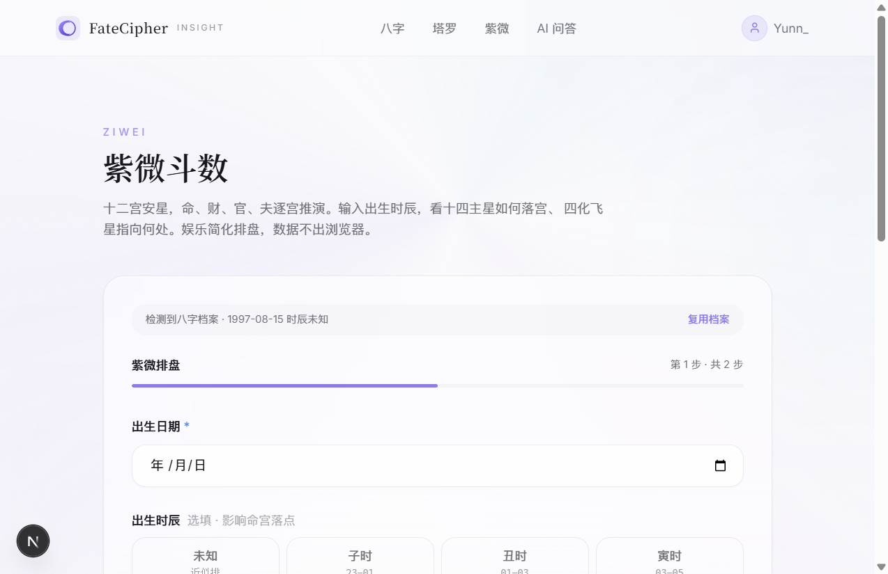
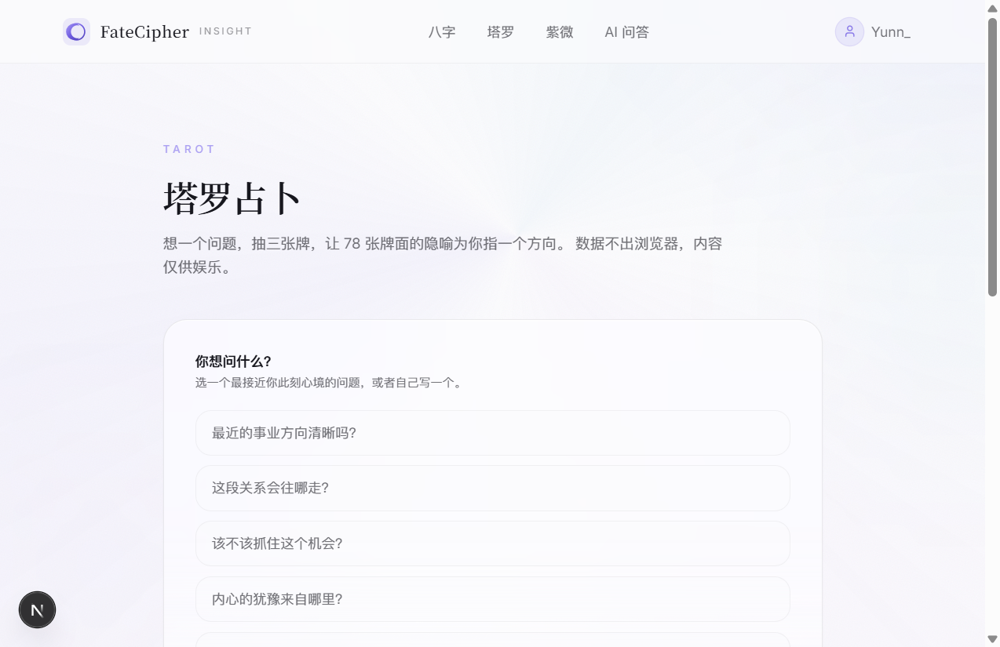

FateCipher · AI 命理洞察平台
一个人、一个想法、从 0 到 1。这是 FateCipher 全部版本的完整产品文档，每个版本独立成章，每个章节固定十四个子项。
一项目相关人员
| 角色 | 姓名 | 职责 |
|---|---|---|
| 产品经理 + 全栈 + UI·UX | 章青云 | 一个人负责：需求分析、产品设计、前端开发、UI 视觉、AI Prompt 工程、八字排盘引擎、项目管理、PRD 撰写 |
二项目开发排期
| 阶段 | 周期 | Commit | 主要产出 |
|---|---|---|---|
| v0.0 初始化 | 1 周末 | b06b7b5 | Next.js 脚手架、首页 Hero、四玩法骨架、八字本地排盘引擎（四柱 + 五行） |
| v0.1 功能优化 | 1 晚上 | a246656 | AI 问答深度思考重构（前 6 段推演 + 大号行动建议）、导航栏 UI（4 入口露出）、品牌名替换（xuanji → fatecipher） |
三项目背景
市面上的命理产品分两类：传统排盘网站（某果网、某子平）堆术语、广告多、UI 停留在 2010 年，排出来的四柱看不懂；AI 算命 app（某小算、某大师）要付费、要注册、AI 怎么得出结论的完全黑盒。用户想试试命理，但搜出来的内容太散、太玄，信不过。
四项目目标
- ✓ AI 深度思考可见：前 6 段结构化推演（五行分析 → 日主旺衰 → 喜忌判断 → 大运流年 → 风险提醒 → 行动建议）全部展示
- ✓ 数据不出浏览器：八字/紫微排盘本地引擎，AI API 只接收排好的四柱，不碰原始出生数据
- ✓ 四种玩法一个入口：首页直接露出，不做二级菜单
- ✓ 免费 + 无注册门槛：首页八字直接排、塔罗直接抽
五目标用户
| 画像 | 痛点 |
|---|---|
| 25–32 岁，职场/情感交叉期 | "工作要不要跳？""ta 是不是我对的人？"——搜出来的命理内容太散太玄 |
| 第一次接触命理，想"试试看" | 排盘网站把你吓跑——看不懂术语、不知道自己盘里有啥 |
| 老用户，想换个方向看看 | 算了八字又想试试塔罗，每个都要重填出生信息 |
六竞品分析与方案选型
竞品对比
| 产品 | 优点 | 缺点 | FateCipher 差异化 |
|---|---|---|---|
| 某果网 | 老牌、全玩法 | 广告多、UI 老、术语难懂 | AI 翻译术语、干净 UI |
| 某小算 | AI 生成、体验流畅 | 要付费、黑盒、要注册 | 免费 + AI 思考可见 + 无门槛 |
| 某大师 app | 有大师背书 | 不透明、付费门槛高 | 用深度思考代替"大师"人设 |
技术选型
| 选型 | 决定 | 理由 |
|---|---|---|
| 框架 | Next.js 15 (App Router) | SSR/SSG 对 SEO 友好（命理内容 Google 有搜索量） |
| 语言 | TypeScript | 类型安全，一个人全栈少踩坑 |
| 样式 | Tailwind CSS v4 | Utility-first，单人快速迭代 |
| AI API | DeepSeek (SSE 流式) | 性价比高；SSE = 用户看得到 AI 一步步思考 |
| 存储 | localStorage（无后端） | 0→1 先验证，省掉部署。后续接后端时 async 签名已对齐 |
七设计思路

首页完整排版
Hero 区决策
| 决策点 | 选型 | 为什么 |
|---|---|---|
| Slogan | "认清自己，看清下一步" | 16 字，行动动词锚定预期 |
| 主 CTA | "开始我的第一份洞察" → /fortune/bazi | 八字最权威，转化路径最短 |
| 品牌色 | 白底 #fbfbfd + 紫 #6b46c1 | 紫 = 神秘 + 科技。禁黄/橙/红 |
| 字体 | 标题宋体 / 正文无衬线 | 传统文化 + 现代 AI 调性 |
| 导航栏 | 4 产品入口直接露出 | 只有 4 个，露出 = 降低决策成本 |
| 四玩法排序 | 八字 → 塔罗 → 紫微 → AI 问答 | 门槛从低到高；消费型 AI 问答放在最后 |
八核心功能详细说明

八字排盘：四柱 + 五行 + 十神

紫微斗数：十二宫 + 星曜

塔罗占卜：三张牌阵

AI 问答：前 6 段推演 + 大号行动建议
| 玩法 | 输入 | 输出 | 技术路径 |
|---|---|---|---|
| 八字测算 | 出生日期 + 时辰 | 四柱排盘 + 五行分析 | 本地排盘引擎（纯 TS） |
| 紫微斗数 | 出生日期 + 时辰 + 性别 | 紫微命盘 + 十二宫 | 本地排盘引擎 |
| 塔罗占卜 | 一个问题 + 抽牌 | 三张牌阵解读 | 本地 + AI 生成解读 |
| AI 问答 | 你的困惑（事业/感情/财运） | AI 回答 + 深度思考 | DeepSeek SSE 流式 |
九数据埋点
未接入v0.1 无埋点 SDK。规划 v0.3 接入 Plausible（隐私友好的轻量埋点）。
十完整主流程图
首页 /
点击哪个玩法?
八字
/fortune/bazi
输入出生日期 + 时辰 → 本地排盘 → 四柱结果
紫微
/fortune/ziwei
输入出生日期 + 时辰 + 性别 → 紫微排盘 → 十二宫
塔罗
/fortune/tarot
输入问题 → 抽三张 → AI 解读
AI 问答
/ask
输入困惑 → AI 深度思考 → 流式输出
十一系统交互时序图
AI 问答一次完整交互
User ask-chat.tsx DeepSeek API
│──输入困惑──▶│ │
│ │──POST /api/ask──▶│
│ │ │──SSE 流式回推思考
│◀──看到推演──│◀──chunk1──────│
│◀──看到推演──│◀──chunk2──────│
│ │ │──SSE 回推正文
│◀──行动建议──│◀──chunkN──────│
│ │──完成───────│
十二异常流程与规则
| # | 场景 | 处理 |
|---|---|---|
| A1 | 出生时间输入无效 | 表单校验 + 红色提示 |
| A2 | 八字排盘引擎算不出来 | try-catch 包裹，显示"数据错误"占位 |
| A3 | AI API 余额不足 / 超时 | 降级到本地规则引擎（ask-engine.ts 已有 fallback） |
| A4 | 用户未登录访问需登录的页面 | AuthGuard 跳 /login |
| A5 | AI 问答额度用完 | 灰色输入框 + "明日再来"提示 |
十三验收标准
| 项 | 结果 |
|---|---|
| 首页 Hero + 四玩法入口可点可跳 | ✅ |
| 八字排盘：输入有效日期 → 正确四柱 + 五行 | ✅ |
| AI 问答：能看到前 6 段结构化推演 + 大号行动建议 | ✅ |
| AI 问答：余额不足时降级本地引擎不崩 | ✅ |
| 导航栏：4 产品入口直接露出，无二级菜单 | ✅ |
| TypeScript：tsc --noEmit 零错误 | ✅ |
十四迭代规划
| 版本 | 类型 | 内容 |
|---|---|---|
| v0.2 | 基础架构 + 新模块 | ProfileStore、档案管理、额度分账——见下一章 |
| v0.3 | 新模块 | 多档案切换（家人档案）、历史结果收藏、埋点 SDK 接入 |
| v0.4 | 后端对接 | Supabase / Cloudflare D1，数据云端同步 |
一项目相关人员
| 角色 | 姓名 | 职责 |
|---|---|---|
| 产品经理 + 全栈 + UI·UX | 章青云 | 需求分析、ProfileStore 架构、/profile 页面开发、四消费方改造、PRD 撰写 |
二项目开发排期
| 阶段 | 周期 | Commit | 产出 |
|---|---|---|---|
| PRD 撰写 | 半天 | 597772e | 需求背景 + 流程图 + 时序图 + 埋点设计 |
| 开发 | 1 天 | 35074fc | ProfileStore + /profile 页面 + 四消费方改造 + signIn 自动迁移 |
| 测试 | 半天 | — | 多账号隔离 + Vitest + 手动边界测试 |
三项目背景
| # | 场景 | 发生了什么 |
|---|---|---|
| P0 | 多账号串数据 | 用户 A signIn 建档 → signOut → B signIn 看到 A 的档案。旧 key fatecipher.profile.bazi 是全局的 |
| P0 | 额度也串了 | AI 问答 5 次额度旧 key 也是全局，A 用完 → B 显示"0 次" |
| P1 | 四种玩法各填一次 | 八字要填、紫微也要填、AI 问答想个性化还要再建一次 |
| P1 | 不能编辑/删除 | 填错出生时间？没法改 |
一句话：v0.1 跑出了产品价值，但用户数据没有"归属"——属于谁、用在哪、能不能改，全没有。档案管理就是给用户数据加归属。
四项目目标
| 目标 | 说明 | 状态 |
|---|---|---|
| P0 多账号隔离 | 档案和额度按 email 分 key | 已完成 |
| P0 ProfileStore 抽象层 | 统一 CRUD API + signIn 自动迁移 | 已完成 |
| P0 /profile 档案页 | 空态 → 详情 → 编辑 → 删除 四态 | 已完成 |
| P1 SiteHeader 入口 | 下拉菜单加「我的档案」 | 已完成 |
| P1 全消费方接入 | bazi/ziwei/ask-engine/ask-chat 统一改 | 已完成 |
五目标用户
| # | 用户故事 | 验收要点 |
|---|---|---|
| US-01 | 作为已登录用户，我希望保存命盘档案，这样四种玩法共用出生信息 | 建档后，八字/紫微/AI 问答三页都检测到"档案已保存" |
| US-02 | 作为已登录用户，我希望 AI 问答结合我的档案回答 | AI 回复引用"你的命盘日主干支" |
| US-03 | 作为用户 A，我希望用户 B signIn 时看不到我的档案 | key 隔离：fatecipher.profile.{email} |
| US-04 | 作为建档用户，我希望能编辑/删除档案 | /profile 三态完整 |
六竞品分析与方案选型
为什么不用后端？
0→1 阶段用 localStorage，有三个理由：
- ① 单人项目，不做后端 = 省掉部署/运维/数据库维护
- ② 八字排盘本身是本地的，档案也本地 = 隐私友好（用户数据不出浏览器）
- ③ ProfileStore 设计成 async API，将来接 Supabase 时只改内部实现，调用方零改动
为什么不直接改 bazi-flow.tsx 里的 STORAGE_KEY？
旧代码里档案读取散落在 bazi-flow.tsx、ziwei-flow.tsx、ask-engine.ts、ask-chat.tsx 四个文件里各自硬编码 key。如果只改 key 不改架构：① 每改一次档案结构，四处都要改；② 迁移逻辑无处安放。所以先抽 ProfileStore 统一 API，再让四个消费方改成调 ProfileStore。
七设计思路
Key 映射
| 场景 | v0.1 key（全局） | v0.2 key（按 email） | 迁移策略 |
|---|---|---|---|
| 命盘档案 | fatecipher.profile.bazi | fatecipher.profile.{email} | signIn 自动搬 + 删旧 key |
| AI 额度 | fatecipher.ask.quota | fatecipher.ask.quota.{email} | 同 signIn 迁移 |
三态设计
空态 · 双 CTA

详情 · 编辑/删除

编辑表单
八核心功能详细说明
M1 ProfileStore（src/lib/profile.ts）
| API | 职责 |
|---|---|
getProfile(email) | 读 fatecipher.profile.{email}，不存在返回 null |
saveProfile(email, data) | 写新 key，自动加 createdAt / lastUpdated |
deleteProfile(email) | 删 key |
migrateFromLegacy(email) | 读旧 key → 搬 → 删旧 key。新 key 已存在则跳过（幂等） |
getQuota(email) / consumeQuota(email) | 额度按 email 分账 |
M2 /profile 档案管理页
AuthGuard 包裹（未登录跳 /login）。四态：
- • 空态："还没有命盘档案" + 双 CTA（去八字测算 / 手动建档）
- • 详情态：出生日期/性别/时辰/出生地 + 编辑/删除
- • 编辑态：四个字段 + 保存/取消
- • 删除：confirm 弹窗 → 二次确认 → 清 localStorage → 回空态
M3 SiteHeader 入口
点击头像
DROPDOWN
· 用户信息
· 我的档案 ← 新增
· 退出登录
· 我的档案 ← 新增
· 退出登录
/profile

运行截图：「我的档案」在分隔线下方
M4 AI 问答 CTA（有档案 vs 无档案）
无档案：紫色建档 CTA 条
有档案：个性化承接语
九数据埋点
| 事件 | 触发时机 | 状态 |
|---|---|---|
| profile_create | 保存档案（首次） | 占位 |
| profile_edit | 编辑保存 | 占位 |
| profile_delete | 删除二次确认 | 占位 |
| profile_migrated | signIn 自动迁移成功 | 占位 |
| ask_cta_click | AI 问答无档案 → 点击 CTA | 占位 |
十完整主流程图
档案生命周期
进入 /profile
已有档案?
否
空态
双 CTA：去八字 / 手动建档
是
详情
字段 + 编辑/删除
signIn 自动迁移（幂等）
用户 signIn
migrateForUser(email)
读旧 key profile.bazi
旧存在
新不存在?
新不存在?
是
搬 → 新 key + migratedAt
删旧 key
完成
否
跳过（幂等）
—
十一系统交互时序图
signIn 自动迁移
User AuthProvider ProfileStore localStorage
│──signIn──▶│ │ │
│ │──migrate──────▶│ │
│ │ │──READ──────────▶│
│ │ │◀─legacy JSON────│
│ │ │ │
│ │ │──CHECK───────────│ 新 key 存在?
│ │ │ NO │
│ │ │──WRITE──────────▶│ 新 key = email
│ │ │──DELETE────────▶│ 旧 key
│ │◀──ok───────────│ │
│◀──ok─────│ │ │
AI 问答读取档案
User ask-chat ProfileStore ask-engine
│──发送提问──▶│ │ │
│ │──getEmail()──▶│ │
│ │◀──email───────│ │
│ │──getProfile()─▶│ │
│ │◀──profile─────│ │
│ │──loadAskContext(email)────────▶│
│ │ │──结合档案构建 prompt
│ │◀──streamReply──────────────────│
│◀──看到思考──│ │ │
十二异常流程与规则
| # | 场景 | 处理 |
|---|---|---|
| E1 | 旧 key 是坏 JSON | try-catch；搬失败不阻塞 signIn |
| E2 | 编辑时另一标签页已改 | v0.2 直接覆盖；v0.3+ 加乐观锁 |
| E3 | email 大小写 | 一律 .toLowerCase() |
| E4 | localStorage 已满 | try-catch + 提示 |
| E5 | 未登录访问 /profile | AuthGuard 跳 /login |
| E6 | 新 key 已存在（已搬过） | 幂等跳过，不覆盖 |
十三验收标准
| 类别 | 项 | 结果 |
|---|---|---|
| 多账号隔离 | A 建档 → signOut → B 看不到 A 的档案 | ✅ |
| A 用完额度 → B 显示 5/5 | ✅ | |
| A signIn → 改 → signOut → signIn 数据仍在 | ✅ | |
| 自动迁移 | 旧 key 存在 + 新 key 不存在 → 自动搬 | ✅ |
| 新 key 已存在 → 不覆盖（幂等） | ✅ | |
| /profile | 空态/详情/编辑/保存/取消/删除全流程 | ✅ |
| TypeScript | tsc --noEmit 零错误 | ✅ |
| Vitest | site-header.test.tsx 8/8 通过 | ✅ |
十四迭代规划
| 版本 | 内容 |
|---|---|
| v0.3 | 多档案切换（家人档案）、历史结果收藏、埋点 SDK 接入 |
| v0.4 | 后端对接（Supabase / Cloudflare D1）、数据云端同步 |
| v0.5 | 运势日历、朋友圈分享 |